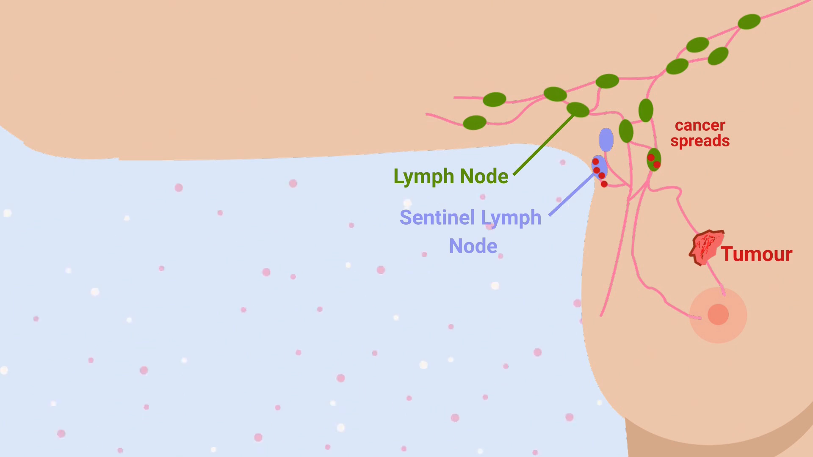
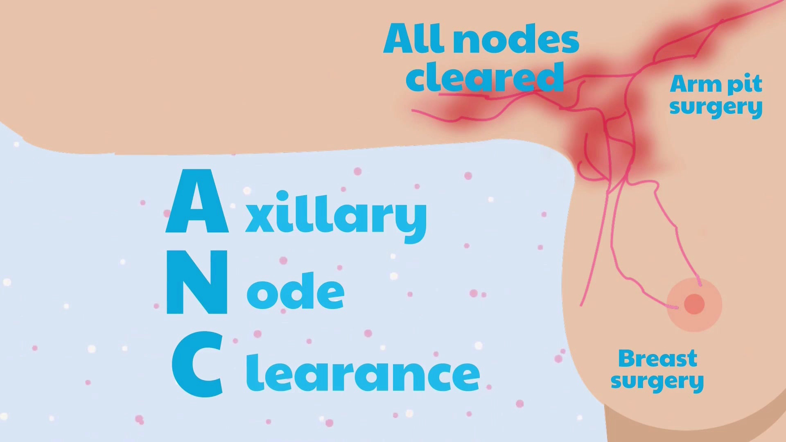
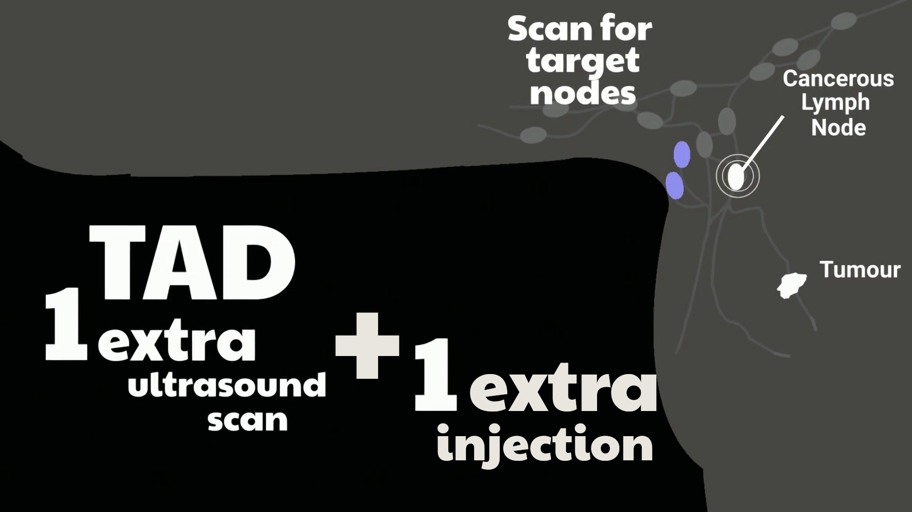

Your breast cancer
You have early breast cancer in one breast, and scans or biopsies show a small amount of cancer in one or two armpit lymph nodes.
Patient information
A UK research study comparing two ways of doing armpit (axillary) surgery for people with early breast cancer.
The TADPOLE animation walks you through what is happening in your armpit, the two types of surgery included in the study, and what taking part would involve.
Prefer reading instead? Scroll down for a step-by-step explanation.
You may hear about TADPOLE from your breast surgeon or breast care nurse if your situation is similar to the one below.
You have early breast cancer in one breast, and scans or biopsies show a small amount of cancer in one or two armpit lymph nodes.
You are having surgery as your first treatment for breast cancer (before any chemotherapy or hormone treatment).
You are being treated at an NHS hospital taking part in TADPOLE. The research nurse or doctor there will talk you through whether the study might be right for you.

Lymph nodes are small glands that help your body fight infections. They are connected by thin lymph vessels and act a little like filters.
In some people with early breast cancer, cancer cells travel from the tumour in the breast to the lymph nodes in the armpit (the axilla).
The sentinel lymph nodes are the first nodes that lymph fluid drains to from the breast. If cancer has spread, it often reaches these nodes first.
Surgeons look at the lymph nodes to see whether cancer has spread and to decide what further treatment you may need.
Everyone in TADPOLE has breast surgery. The study compares two safe and widely used ways of removing lymph nodes from the armpit.
Axillary node clearance

Targeted axillary dissection


In TADPOLE, a computer allocates people by chance to ANC or TAD. This is called randomisation.
More people are placed in the TAD group than the ANC group so that we can learn more quickly about the newer, targeted surgery. Neither you nor your doctors can choose your group.
TADPOLE is being carried out across the UK. The numbers below are updated by the central trial team from time to time.
People who have joined TADPOLE
122
People who have completed follow-up
74
Hospitals taking part
24
These figures are for information only and are not updated in real time.
TADPOLE is open, or preparing to open, in a number of NHS hospitals across the UK. Your breast team can tell you whether your hospital is one of them.
The map shows participating hospitals. You can zoom in and click on a site to see more detail.
Map provided by the central TADPOLE team via Google Maps.
Here is a simple overview of what usually happens if you decide to join TADPOLE.
Your surgeon or research nurse explains the study, answers your questions and gives you written information to take home.
You choose whether to join. If you decide to take part, you sign a consent form. You can change your mind at any time.
Before your operation, we measure your arm and ask you to fill in short questionnaires about your symptoms and quality of life.
A computer allocates you by chance to ANC or TAD. You then have breast and armpit surgery as planned.
After surgery you have any recommended treatments, such as radiotherapy, chemotherapy or hormone therapy.
We keep in touch for up to five years to see how your arm is doing, how you are feeling and how your cancer treatment has gone.
No. Joining the study is your choice. If you decide not to take part, you will still receive the best standard care available.
No. Your decision will not affect how your doctors and nurses look after you now or in the future.
Both ANC and TAD are established operations. All surgery has risks such as bleeding, infection and stiffness. ANC removes more lymph nodes and is linked with a higher risk of arm swelling. TAD removes fewer nodes; the study checks that this is as safe for cancer control.
Your hospital team collects information from your medical records and sends coded data to the Bristol Trials Centre. Data are stored securely and results are reported so that no individual is identified.
Yes. You can withdraw from the study at any time without giving a reason. Your team will discuss what happens to information already collected about you.
When the study is finished we will publish the results in medical journals and share a plain-language summary on this website. You can also choose to receive a summary directly.
These documents are similar to the information you may be given in clinic. Your local team will give you the versions that apply to your hospital.
A detailed leaflet explaining the study in full.
Download PDFMore detail about how the study is run and what is measured.
Full InformationA visual overview of the visits and follow-up in TADPOLE.
Download PDFIf you need these in large print, audio or another language, please ask your local research team.
The study has been reviewed by a Research Ethics Committee and the Health Research Authority. It is registered on a public trials registry. Regulators and auditors may look at study data to check that it is being run safely and correctly.
This website gives general information and does not replace advice from your own healthcare team.
{kind=link}